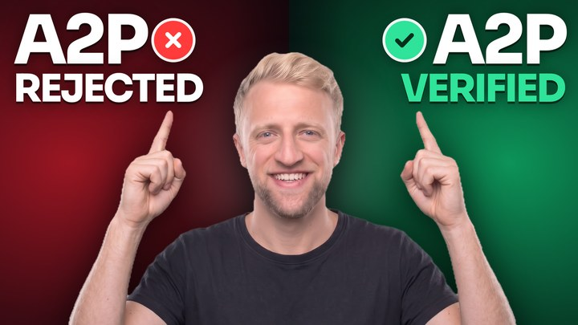

A2P video: your title in today's YouTube results
Tap a number to change your title everywhere on this page. The ten videos are today's live results for the search below, with your chosen thumbnail placed among them.
Put titles 1, 2 and 3 into the title test in YouTube Studio. If you want only one, use title 1. Changed since yesterday: Verified, not Approved (it is what people type and what your thumbnail says), and the search words now come first.
Search on a computer
YouTube's own order for this search on Wed Nov 25, 2026. Your video sits in slot 3 so you can compare; where a new video really lands is not known before it is live.
GoHighLevel A2P REJECTED? Fix It in 8 Minutes (2026 Guide)
320 views · 3 months ago
 25:38
25:38The New Fastest Way to Get A2P Verified in GoHighLevel
15K views · 4 months ago

24:29No views · just now
 10:17
10:17A2P 10DLC Compliance Tutorial: Complete GoHighLevel Setup Guide 2025
19K views · 1 year ago
 37:29
37:29How to Get A2P 10DLC Approved the First Time (GoHighLevel)
11K views · 9 months ago
A2P REJECTED in GoHighLevel? Do This (Step-by-Step Guide)
3.4K views · 11 months ago
 18:55
18:55The New Way to Get A2P Verified in GoHighLevel (Step-by-Step)
3.3K views · 3 months ago
A2P 10DLC for GoHighLevel Explained + Full Live Tutorial! (UPDATED for 2025)
47K views · 2 years ago
 15:37
15:37GoHighLevel Just Made A2P Verification 10x Easier
7.7K views · 9 months ago
GoHighLevel A2P Verification: Get Approved in Minutes with AI (Unlock SMS)
3.7K views · 4 months ago
GoHighLevel A2P Verification Made Easy (2026 Guide)
2.9K views · 5 months ago
Search on a phone, and the up next list
The phone shows two lines of a title. The up next list beside a video is the smallest place a title has to work.
GoHighLevel A2P REJECTED? Fix It in 8 Minutes (2026 Guide)
Tristan Gosset · 320 views · 3 months ago
Jonny the Nomad · No views · just now
25:38The New Fastest Way to Get A2P Verified in GoHighLevel
GHL Wizard · 15K views · 4 months ago
10:17A2P 10DLC Compliance Tutorial: Complete GoHighLevel Setup Guide 2025
ItsKeaton · 19K views · 1 year ago
37:29How to Get A2P 10DLC Approved the First Time (GoHighLevel)
Nuno Tavares · 11K views · 9 months ago
GoHighLevel A2P REJECTED? Fix It in 8 Minutes (2026 Guide)
Tristan Gosset
320 views · 3 months ago
Jonny the Nomad
No views · just now
25:38The New Fastest Way to Get A2P Verified in GoHighLevel
GHL Wizard
15K views · 4 months ago
10:17A2P 10DLC Compliance Tutorial: Complete GoHighLevel Setup Guide 2025
ItsKeaton
19K views · 1 year ago
37:29How to Get A2P 10DLC Approved the First Time (GoHighLevel)
Nuno Tavares
11K views · 9 months ago
A2P REJECTED in GoHighLevel? Do This (Step-by-Step Guide)
Tristan Gosset
3.4K views · 11 months ago
18:55The New Way to Get A2P Verified in GoHighLevel (Step-by-Step)
Carson Reed
3.3K views · 3 months ago
A2P 10DLC for GoHighLevel Explained + Full Live Tutorial! (UPDATED for 2025)
ItsKeaton
47K views · 2 years ago
The titles
Studio's title test takes up to three and picks the winner by watch time. Copy from here.
1.How to Get A2P Verified in GoHighLevel (Copy My 5 AI Prompts)
Opens with the words people type (how to get A2P verified) and with the wording of the fastest video in the niche (GHL Wizard, 15K views). The bracket is the one thing no other title in these results offers: prompts to copy. Same word as your thumbnail.
Risk: The first seven words look like GHL Wizard's and Carson Reed's titles. The bracket has to do the work, and it is read last.
2.How to Get A2P Verified in GoHighLevel (New Chat Widget Method)
Same opening, different bracket: the method that changed this year. Tested against title 1 it tells you what this audience clicks for, AI prompts or the new method.
Risk: Two results already say new way. Nothing in it is yours alone.
3.The Only GoHighLevel A2P Video You Will Ever Have to Watch
Your own hook with the keyword added. It reads unlike every other title in the results, which helps on the home page and with people who know you.
Risk: It does not say what is inside, and after a quiet channel most viewers come from search.
4.Use AI to Get A2P Verified in GoHighLevel (Copy My 5 Prompts)
Yesterday's pick with Verified. Leads with what is different.
Risk: Nobody types use AI for A2P (YouTube has no suggestion for it), and it can read as if AI does the registration. The outside review flagged both, so it moved from pick to backup.
5.GoHighLevel A2P Verification: Full Tutorial With 5 AI Prompts
Opens with the most typed phrase (gohighlevel a2p verification). Full Tutorial is the strongest pattern on your old videos.
Risk: Three of the ten results open with the same two words, so it blends in.
What people type into YouTube
YouTube's own search suggestions, pulled today. Verification and verified lead, approved shows up twice, AI not at all. So AI is a reason to click, not a search word. These are not search volume numbers: that is the one thing the paid tool vidIQ would add.
Pulled Wed Nov 25, 2026 from a signed-out search. Your own results can differ by watch history and country. Views and channel sizes are from the same pull. Views are not click rate, and a big channel lifts any title.